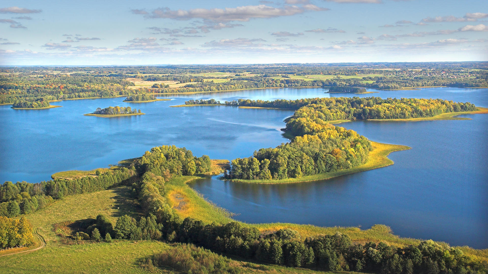
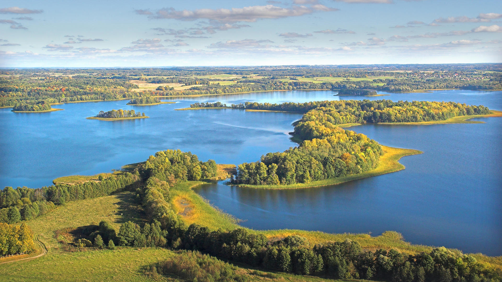

Here's what is waiting for you:
Vilnius is the capital of Lithuania and its largest city, with a population of 542,664 as of 2015. Vilnius is located in the southeast part of Lithuania and is the second largest city in the Baltic states.
Vilnius is known for its baroque architecture, seen especially in its medieval Old Town. But the buildings lining this district’s partially cobblestoned streets reflect diverse styles and eras, from the neoclassical Vilnius Cathedral to Gothic St. Anne's Church.
You are going to visit and learn about Vilnius Old Town, Cathedral Square, Gediminas Castle and Church of st. Anne.
What you will see in Vilnius:
Anykščiai is a ski resort town in Lithuania with a population of 10,575 as of 2011.
The Roman Catholic Church of St. Matthias in Anykščiai is the tallest church in Lithuania, with spires measuring 79 metres (259 feet) in height. St Matthew's Church of Anykščiai is unique not only for its height and artistic works, but also for its observation deck, established in the height of 33 metres. Having climbed 186 steps, the visitors can enjoy the beautiful panorama of Anykščiai surroundings and find out some historical facts about the church and its location.
The Treetops walking path, located in the famous Anykščiai Pinewood is the only treetop path in Eastern Europe. The path is in the level of the tree crowns and it lasts for 300 meters, evenly going up to 21 meters high.
Šventoji slope is one of the most breath-taking places around the Šventoji river slopes, which attracts tourists and scientists as well. It is said that Šventoji Valley started to form 10-12 thousand years ago.
You are going to visit and learn about Church of St Matthew's, The Treetops walking path, Šventoji slope and more!
What you will see in Anykščiai:
Trakai is a historic city and lake resort in Lithuania with a population of 5,266 (as of 2010).
It lies 28 kilometres (17 miles) west of Vilnius, the capital of Lithuania. Because of its proximity to Vilnius, Trakai is a popular tourist destination.
A notable feature of Trakai is that the town was built and preserved by people of different nationalities. Historically, communities of Karaims, Tatars, Lithuanians, Russians, Jews and Poles lived here.
Part of the Trakai Historical National Park, Trakai Island Castle is a 14th-century fortress in the middle of Lake Galvė. Once a home to Lithuania’s grand dukes, it now houses the Trakai History Museum, with archaeological objects, coins and crafts. On the lake’s southern shore are the stone ruins of the Trakai Peninsula Castle.
6:00-11:00: Vilnius
11:00-11:40: Travelling Vilnius - Anykščiai
11:40-16:00 Anykščiai
16:00-17:00: Travelling Anykščiai - Trakai
17:00-18:00: Dinner at a restaurant
18:00-23:00: Trakai
23:00-00:00: Arriving back to Vilnius
Back